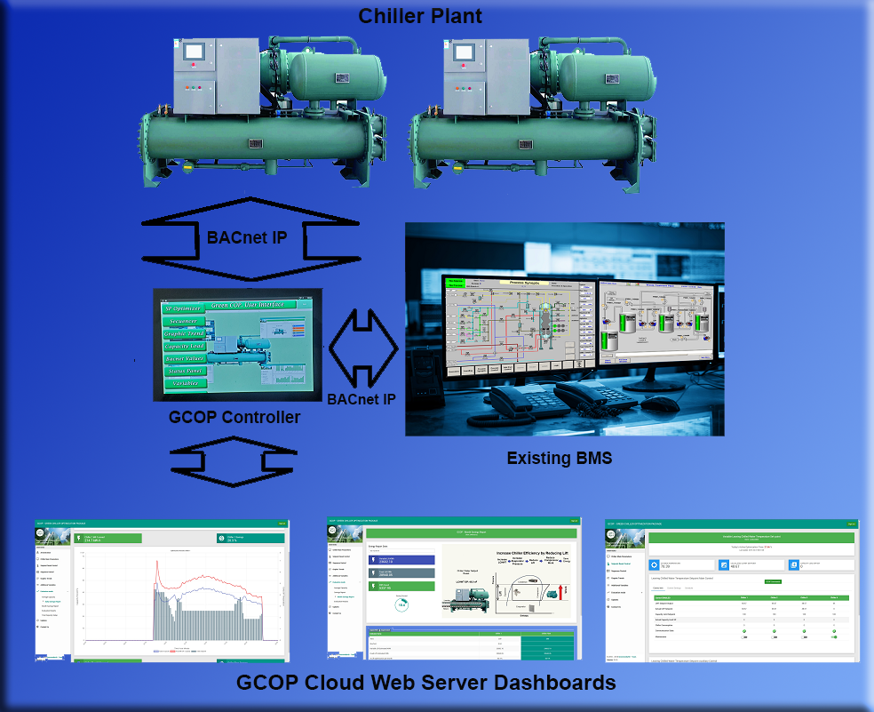

About Author
Software Developer
Main technical skill used in the projects.
- Front-end languages and frameworks: JavaScript, HTML, CSS, Bootstrap, and jQuery
- Back-end language and database: PHP and MySQL
- Gateway Programming: Java for Android using Android Studio
- Controller Programming: Sedona language and Python
- REST API in JSON for Web Servicing
- Implementation of BACnet IP and Modbus TCP IP protocols for integration using Java
Software Developer, Building Automation Engineer.
Graduated as Industrial Automation Engineer, started to develop software to support Building Automation.
The latest full stack software development projects created for GrennmediaHD LLC and DLControl are:
- Design, programming, and implementation of a Signage Digital Media Playlist Solution, creating the GreenmediaHD Web Site for the Playlist Edition and the Android Applications for Signage in the TV Boxes.
- Design, programming, and implementation of optimization algorithms for chiller plant to save energy, creating the GCOP Controller Application and the GreenmediaHD GCOP Cloud Website for the Cloud Analytic Dashboard
- Design, programming, and implementation of the Rooftop Unit Smart Control Solution (RTU-SC) to save energy in the rooftop units of the Building HVAC System. This solution modulates the fan speed to a proper value while protecting the compressor and keeping a good comfort humidity value. A GreenmediaHD Rooftop Cloud Website was created for the Cloud Analytic Dashboard.
- Design, programming, and implementation of a Web site to evaluate the Indoor Air Quality (IAQ). The GreenmediaHD IAQ System use negative ion injection technique to improve the air quality by reducing the possible Volatile Organic Compound (VOC) contamination and minimizing the risk of health hazard, from air flying virus and bacteria in Duct Air Conditioning Systems. Air Quality Sensors located inside the building are used to evaluate and score the air quality. A data logger Gateway application was developed to collect all the sensors data, and the Air Quality Cloud Website was created to display the collected information in analytic dashboards.
All the developments required complex real time solutions, implementation of universal building automation protocols such as BACnet and Modbus, REST API development and much more.
GCOP Project
Project Design

In the figure, the data flow between each component is shown.
Developed Components
The main goal of the GCOP Project was to get a solution that automatically resets in real time the leaving chilled water temperature (LCHWT) setpoint of a chiller to an optimum value to reduce lift and save energy in the chiller plant. For more information about how the GCOP works and how it saves energy visit the page: www.greenmediahd.com/gcop
The GCOP Project has software solutions in campus and in the cloud. The main developed components are:
- Controller: This is the heart of the project solution where all the optimization algorithms are running to make the chiller plant save energy.
- BACnet IP protocol. This is the campus protocol used to communicate the GCOP controller with each chiller control panel.
- GCOP Controller BACnet IP Server. This server is used to integrate the GCOP controller to existing BMS (Building Management Systems) if required
- GCOP Cloud Web Server. In this Web Server all the information of the GCOP controllers are saved in a Cloud Database and is available to the users in different dashboards web pages
- REST API. There are two types of APIs. Private APIs are used to communicate the GCOP Controller with the GCOP Cloud Web Server and public APIs are used to share the data saved in GCOP Cloud Web Server with third party developers
GCOP Project
GCOP Controller
GCOP Controller Software Components
The main functions of this controller are the optimization algorithms used to calculate the optimal set point value for the leaving chilled water temperature and the communication tasks to send and receive information from the chillers control panels, the existing BMS, and the GCOP Cloud Web Server
The GCOP Controller is an Android device. All programs were developed using Java programming language and Android Studio as IDE platform
The main developed components for the GCOP Controller software are:
- Touch Screen User Interface. This component is used as human interface to configure the controller, show data in different layouts and send commands to the chillers control panel
- Control Function Task. This component contains the optimization algorithm programs
- BACnet IP Communication Task. This component has a BACnet discovery module for mapping the chillers variables and any other BACnet variable in campus and is used to collect all information needed from the chiller plant to run the control algorithms
- BACnet IP Server Task. The GCOP Controller has an embedded BACnet IP Server programmed in Java as part of the GCOP App. This server is used to map all the monitoring and control parameters into BACnet objects that can be discovered by any BACnet client device in the same network of the GCOP Controller (or different network using a BBMD Router). As BACnet IP is a universal standard industrial protocol, third party controllers from different manufacturer can communicate with the GCOP Controller and use all the available GCOP data.
- Private REST API Task. This component is used to send and receive information and commands from the GCOP Cloud Web Server.
GCOP Project
Cloud Web Server
GCOP Cloud Web Server Structure
The GCOP Cloud Web server receive data from the GCOP controllers, save it into a database, and show the information to the users in different dashboards formats. This server also sends information and commands back to the controllers.
The GCOP Web server backend was programmed using PHP and MySQL. For the front-end all pages were created using HTML, CSS, JavaScript, and some frameworks as Bootstrap and jQuery.
The main developed components of the GCOP Cloud Web Server are:
- Administration Management: This component is used to create user accounts, check connections and health of every GCOP controller installed, setup special parameters in the GCOP controller for every connected system and register every GCOP Controller in a database.
- Content Management. This component is used to inform the users about the GCOP controller, the benefits, how it works, why it saves energy, and how to contact GreenmediaHD for support and new installations.
- Web Services. This component receives the private REST API from each GCOP controller registered and offers public REST API for third party integration systems. The result information is presented in JSON format.
- Analytic Dashboards. This component is used to present the GCOP controller operative information to the users in different layouts such as graphic trends, parameters listing, saving reports, comparative trends, and optimization algorithms operation status. This component also allows the authorized users to send commands from the Cloud Web Server to the GCOP Controller.
RTU-SC Project
Project Design
Developed Components
The main goal of the RTU-SC Project was to get a solution that save energy in the rooftop units of a Building HVAC System by modulating the fan speed to a proper value, while protecting the compressor and keeping a good comfort humidity value. For more information about how the RTU-SC works and how it saves energy visit the page: www.greenmediahd.com/rooftop
The RTU-SC Project has software solutions in campus and in the cloud. The main developed components are:
- RTUcontrol38 Controller. This is the main component of the RTU-SC and is used basically to modulate the fan speed to save energy. There is one controller per each RTU. Optionally this controller can replace the original control of the RTU and then make the temperature control too.
- RTU-Logger Gateway. The functions of the Gateway are: receive data from each RTUcontrol38 controller and send control commands back to the controllers; send all collected data to the Cloud Web Server; and receive commands from the Cloud Server to transmit them to the controllers. This Gateway also allows integration to existing BMS (Building Management Systems)
- RTU-SC Cloud Web Server. In this Web Server all the information of the RTU-Logger Gateway is saved in a Cloud Database and is available to the users in different dashboards web pages. The information is transmitted from the Gateway to the Cloud Server using private REST API
RTU-SC Project
RTUcontrol38 Controller
Controller Software Components
RTUcontrol38 Controller is used basically to retrofit the existing RTU units in the building HVAC system to save energy by modulating the fan speed to an optimized value.
This controller is supplied by Contemporary Control System, Inc., and it is programmed using Sedona Language Graphic Editor. The Sedona Language is widely used in PLC programming. For this project, a new Sedona Kit of six components were developed and added to the Sedona Graphic Editor to accomplish the controller saving energy task.
A Python program for initial setup and controller program integrity checkup is executed to make the controller more reliable. This program checks if the controller program checksum is ok. If an error is detected, a backup program copy is loaded.
The main developed components functions are:
- Collect data from new pressure, temperature, and current transformer sensors installed the retrofitted RTU, and modulate the fan speed using a Variable Speed Drive (VSD). Optionally, it can also control room temperature and dampers using contactors to turn ON/OFF the compressors
- Optimization control algorithm to calculate the optimal fan speed based in the measured parameters.
- Calculation of energy consumption reduction in real time.
- Detect alarms that can affect the correct operation of the RTU.
- Time ON/OFF Schedule to save energy when the RTU is not in use.
RTU-SC Project
RTU-SC Logger Gateway
RTU-SC Logger Gateway Software Components
This Gateway is basically used, on the one hand, to receive and send data to each RTUcontrol38 controller, on the other hand, send all collected data to the Cloud Web Server and receive commands from the Cloud Server to transmit them to the controllers.
The RTU-SC Logger Gateway is an Android device. All programs were developed using Java programming language and Android Studio as IDE platform
The main developed components for the Gateway software are:
- Android User Interface. This component is used as human interface to configure the Gateway, show the collected data in different layouts and send commands to each RTUcontrol38 controller
- Web Server User Interface. The Nanohttpd Web Server component was used to embed a Web Server in the Android App program. This component is used as human interface to configure the Gateway, discover and add new RTUs controllers, and show the collected data in web pages, so the Gateway can be configured from any device with a browser connected in the same local network of the Gateway.
- BACnet IP Communication Task. This component has a BACnet discovery module for mapping each RTUcontrol38 controller variable.
- BACnet IP Server Task. The Gateway has an embedded BACnet IP Server programmed in Java as part of the RTU-SC App. This server is used to map all the monitoring and control parameters into BACnet objects that can be discovered by any BACnet client device in the same network of the RTU-SC Logger Gateway (or different network using a BBMD Router). As BACnet IP is a universal standard industrial protocol, third party controllers from different manufacturer can communicate with the Gateway and use all the available RTUcontrol38 controller data.
- Private REST API Task. This component is used to send and receive information and commands from the RTU-SC Cloud Web Server.
RTU-SC Project
Cloud Web Server
RTU-SC Cloud Web Server Structure
The RTU-SC Cloud Web server receive data from the RTU-SC Logger Gateway, save it into a database, and show the information to the users in different dashboards formats. This server also sends information and commands back to the Gateway.
The RTU-SC Web server backend was programmed using PHP and MySQL. For the front-end all pages were created using HTML, CSS, JavaScript, and some frameworks as Bootstrap and jQuery.
The main developed components of the RTU-SC Cloud Web Server are:
- Administration Management: This component is used to create user accounts, check connections and health of every Gateway installed and the configuration of different dashboard screens.
- Content Management. This component is used to inform the users about the RTU-SC solution, the benefits, how it works, why it saves energy, and how to contact GreenmediaHD for support and new installations.
- Web Services. This component receives the private REST API from each RTU-SC Logger Gateway
- Analytic Dashboards. This component is used to present each RTUcontrol38 controller operative information collected in the Gateway to the users in different layouts such as parameters listing, saving reports, operation alarm status, setpoints configurations, and time schedules.
IAQ Project
Project Design
Developed Components
The main goal of the Indoor Air Quality(IAQ) Project was to get a solution to monitor and evaluate in real time, the IAQ after the installation of negative ion injection technique to reduce the possible Volatile Organic Compound (VOC) contamination, and minimizing the risk of health hazard, from air flying virus and bacteria in Duct Air Conditioning Systems. For more information about how the IAQ System works and how it improves human health, visit the page: www.greenmediahd.com/airdata
The IAQ System Project has software solutions in campus and in the cloud. The main components are:
- Bipolar Ionization System. This system creates a plasma curtain of billions of Negative Ions, at the Air Handler Unit.
- Air Quality Data Collection Sensors to evaluate and score the air quality. These sensors measure temperature, humidity, CO2, VOC/Chemicals and pm2.5/Fine Dust and are installed in several locations inside the building.
- A developed IAQ-Logger Gateway. The functions of the Gateway are: receive data from each Air Quality Sensor and send all collected data to the IAQ Cloud Web Server. This Gateway also allows integration to existing BMS (Building Management Systems)
- A developed Air Quality Cloud Web Server. In this Web Server, all the information of the IAQ-Logger Gateway is saved in a Cloud Database and is available to the users in different dashboards web pages. The information is transmitted from the Gateway to the Cloud Server using private REST API
IAQ Project
Air Quality Sensors
Air Quality Sensor Device Local HTTP Service
The Air Quality Sensors used in the project can sense five air quality indicators and score the total result to indicate overall air quality.
The sensors family selected is the Awair Element supplied by Awair Inc.
Each sensor is wireless and has a local web service that can be used to get the sensed values. The sensor is connected wirelessly to an Access Point in a local network
Depending on the size of the building and the number of zones to be monitored, multiples AP routers can be used to connect one or multiples air quality sensors. These routers are programmed to access each sensor from outside the router and to use static IP address in each sensor for easy identification.
To communicate with the Local HTTP Service of each sensor, two REST API are used:
- Configuration API. This API is used to get information related with sensor MAC address and sensor ID to unique identify each sensor in the local network
- Read data API. This API is used to get all the air quality parameters values such as: temperature, humidity, CO2, VOC/Chemicals, pm2.5/Fine Dust, and the score value calculated by the sensor device to inform about the overall air quality.
All the REST API Request are made by the IAQ-Logger Gateway.
IAQ Project
IAQ Logger Gateway
IAQ Logger Gateway Software Components
This Gateway is basically used to collect data from each Air Quality Sensor Device and send all collected data to the Cloud Web Server.
The IAQ-Logger Gateway is an Android device. All programs were developed using Java programming language and Android Studio as IDE platform
The main developed components for the Gateway software are:
- Android User Interface. This component is used as human interface to configure the Gateway and show the collected data in layouts.
- Web Server User Interface. The Nanohttpd Web Server component was used to embed a Web Server in the Android App program. This component is used as human interface to configure the Gateway and show the collected data in web pages, so the Gateway can be configured from any device with a browser connected in the same local network of the Gateway.
- Sensor Device REST API Request Task. This component has a discovery module to identify the sensors and get the air quality parameter from each sensor device.
- BACnet IP Server Task. The Gateway has an embedded BACnet IP Server programmed in Java. This server is used to map all the air quality parameters collected from each sensor into BACnet objects that can be discovered by any BACnet client device in the same network of the IAQ Logger Gateway (or different network using a BBMD Router). As BACnet IP is a universal standard industrial protocol, third party controllers from different manufacturer can communicate with the Gateway and use all the available air quality data.
- Private REST API Task. This component is used to send and receive information from the IAQ Cloud Web Server.
IAQ Project
Cloud Web Server
IAQ Cloud Web Server Structure
The IAQ Cloud Web server receive data from the IAQ Logger Gateway, save it into a database, and show the information to the users in different dashboards formats that allow the users to evaluate the indoor air quality of the building.
The IAQ Web server backend was programmed using PHP and MySQL. For the front-end all pages were created using HTML, CSS, JavaScript, and some frameworks as Bootstrap and jQuery.
The main developed components of the IAQ Cloud Web Server are:
- Administration Management: This component is used to create user accounts, check connections and health of every Gateway installed, and the configuration of different dashboard screens.
- Content Management. This component is used to inform the users about the IAQ solution, the benefits, how it works, why this solution improve air quality, and how to contact GreenmediaHD for support and new installations.
- Web Services. This component receives the private REST API from each IAQ-Logger Gateway
- Analytic Dashboards. This component is used to present air quality information of each zone of the building to the users in different layouts such as parameters listing per zones, air quality comparative tables, and historical graphics trends.
Projects Galery
Programming and Deployment
- All
- Coding
- Devices
- Web App
- Installation
{kind=link}
{kind=link}
{kind=link}
{kind=link}
{kind=link}
{kind=link}
{kind=link}
{kind=link}
{kind=link}
{kind=link}
{kind=link}
{kind=link}
{kind=link}
{kind=link}
{kind=link}
{kind=link}
Contact
Contact Me
Location:
Pembroke Pines, Broward, Florida 33027
Email:
reynaldo@greenmediahd.com